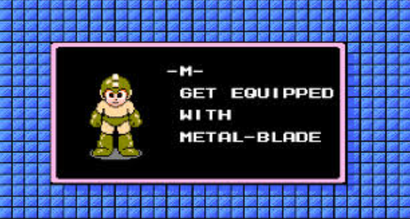
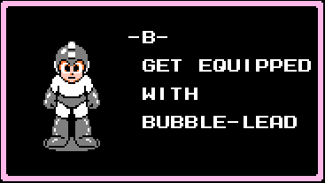

#inject
The enumerable module has been blowing my mind as a toolkit for creating meaningful code. In simpler times (one week ago) a method could only achieve a goal in a few clunky ways, and my pairing experiences resulted in like-minded approaches to tackling challenges.
This week peels back the curtain a bit on the potential for creativity in Ruby. Pairing is suddenly much more fun, because everyone I collaborated with had different ideas on what methods to use, or even how to structure the entire solution. Methods for iterating through arrays and hashes have been a large part of the focus for the week, but the enumerable module in particular is becoming the engine for how I perceive possible avenues of problem solving.
I've had my eye on #inject, mostly because I did a bunch of challenges on coderbyte.com, which lets you see how other users have solved the problem after you've submitted your solution. Even when I was reasonably proud of my solution, someone else's would pop up and freak me out how terse they could make their code. Usually these occasions involved a combination of #inject and a regular expression - so it may as well have been just binary code - and was too much to untangle at that stage.
Fortunately, #inject is much simpler to understand in its basic form. Let's start with the easiest way to use it - we have an array of integers and we want to add them together. Usually I would create a new variable to store the sum values and iterate through the array incrementing sum, like this:
array = [1, 2, 3, 4]
sum = 0
array.each { |num| sum += num }
sum
=> 10
Not bad. Here's how #inject handles it:
array = [1, 2, 3, 4]
array.inject { |memo, element| memo + element }
=> 10
We didn't even bother with the placeholder variable. It's built in to #inject - that was the memo argument in the block. Let's break that down:
- #inject is called by an object, in this case an array
- Two arguments are supplied in the block, the first is a placeholder, or accumulator value (Ruby docs call it a "memo"), the second is the element currently being indexed
- The block is processed once for each value, with the memo value being the result of evaluating the previous loop
- The block returns the value of the memo after completing
So in our adding method we started at array[0], which was 1, moved to the array[1], and added the value of memo (which is 1) to the next element, which is then stored in memo for the next element to process. When we get to the end, we don't even have to return a sum variable because #inject has already implicitly done it.
So why didn't memo do anything on the first loop through that block? There was no previous value stored because the loop hadn't run yet. It defaults to storing the first value then using it starting on the second pass. But want if you want it to have a value? Turns out #inject accepts an optional argument before it runs a code block:
(3..6).inject(2) { |memo, num| memo * num }
=> 720
So here the code block was supplied with a starting value for memo, so starting with the first loop, it applied 2. Instead of multiplying 3 * 4 * 5 * 6 it started with memo * num being 2 * 3. After the first loop runs, memo is now 6 instead of just 3. I want to point out 2 things: first, that this time we called #inject on a range instead of an array (totally fine), and second, the code block isn't running memo *= num, it's memo * num. That's because you don't need to explicitly reassign a value to the placeholder - it's built in to the function.
I want to end with a method I wrote for a challenge last week that takes an array of strings and returns the shortest string:
def shortest_string(list_of_words)
shortest = list_of_words[0]
list_of_words.each do |word|
if word.length < shortest.length
shortest = word
end
shortest
end
What does #inject have to say about that?
def shortest_string(list_of_words)
list_of_words.inject { |shortest, word| word.length < shortest.length ? word : shortest }
end
When I figured this out I was like
as opposed to when I learned that #collect was exactly the same as #map and I was like
